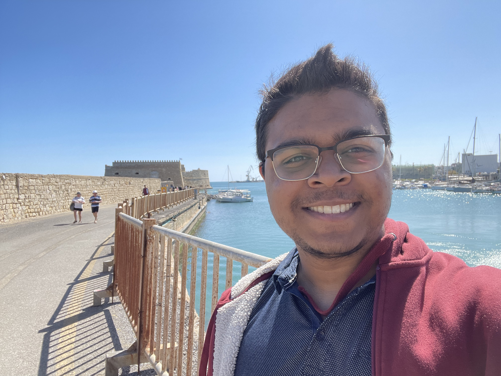
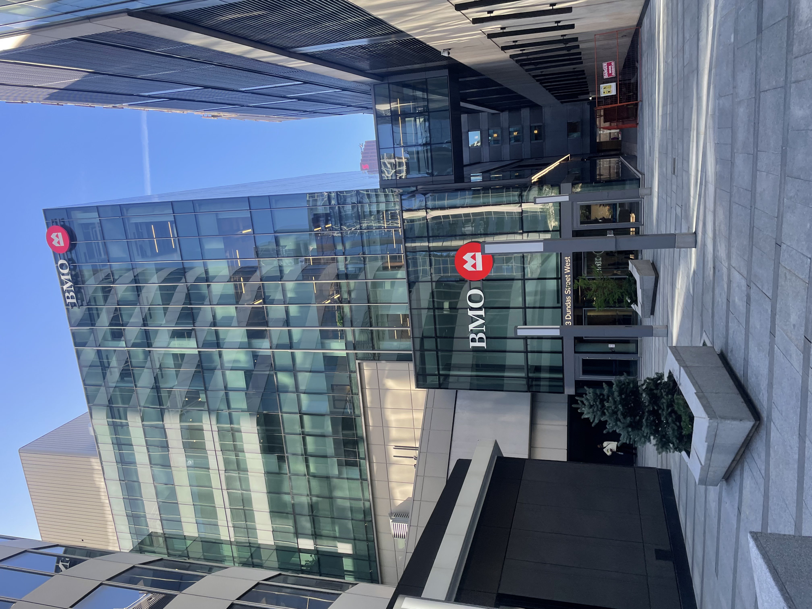

BMO (Chicago, Summer 2023) Software Developer. I worked across backend and frontend tasks tied to internal banking workflows. On the backend I tested and debugged Java based APIs for eSignature and document collection, using Postman to validate requests, responses, and edge cases. On the frontend I made targeted TypeScript updates on loan application pages to fix usability issues and align behavior with requirements. I learned how to work safely inside an existing enterprise codebase, reproduce bugs from incomplete reports, and validate changes end to end before handoff.

Canadian Bank Note (Ottawa, Summer 2022) Systems Administrator. I supported PKI infrastructure work involving EJBCA and certificate lifecycle processes, and I wrote documentation intended to be usable for onboarding and operational handoffs. I also contributed to internal automation work using Puppet and tooling around OpenSSL, focused on making repeatable PKI related tasks less manual and less error prone. I learned how infrastructure changes are documented and rolled out under strict security and reliability constraints, and I enjoyed the mix of security detail and practical automation.
I am a software engineering graduate from Carleton University with internship experience in enterprise backend, cloud automation, and infrastructure adjacent work. Across roles, the consistent theme has been joining established systems, learning them quickly, and shipping fixes or improvements without disrupting production workflows. My strongest areas are debugging, automation, and reliability oriented work across backend services and internal platforms.
If you are reviewing this page for hiring, the short version is: I do best in roles that sit close to production systems, where success is measured by stability, maintainability, and clear communication during issues.

Kongsberg Geospatial (Ottawa, Winter 2023) Software Developer. I debugged and fixed issues in geospatial visualization software, including behavior problems like incorrect compass handling, duplicate objects, and route following errors. I also supported customer facing demos, including multi computer setups, where reliability and repeatable setup mattered as much as the code changes. I learned how to validate fixes with real user feedback, how to troubleshoot across UI and system boundaries, and how to treat demos like production environments with recovery steps and predictable configuration.

BMO (Toronto, Summer 2024) Support Analyst. I supported internal chatbots deployed on Azure and handled outages by reading logs, isolating failure points, and implementing fixes that reduced repeat incidents. I migrated chatbots from LUIS to Azure Language Studio and automated restarts with Logic Apps to reduce manual recovery. I also improved internal SharePoint workflows and permission structures for large user groups. I learned incident triage under time pressure, clearer status communication, and how to prioritize fixes that prevent recurrence.